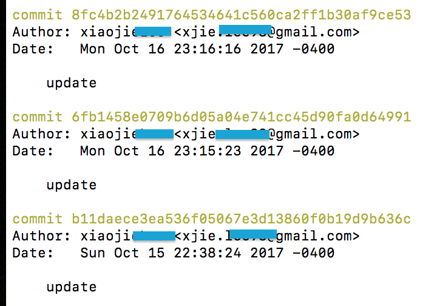
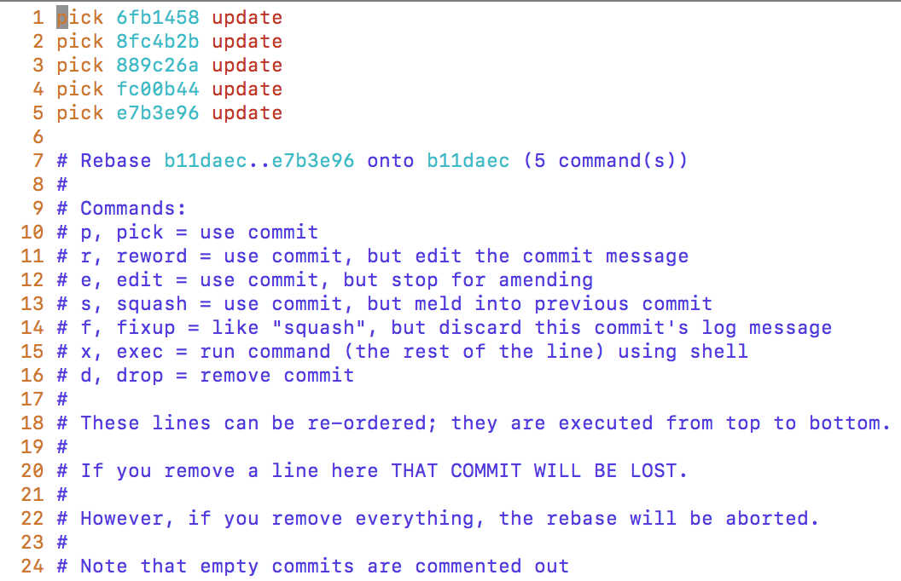

Git Notes: Some useful Tips for Git
Today, we are going to talk about some useful commands in Git. Those commands will be introduced by scenarioes.
We should treat github as a tool and record something as a menu whenever you need it you can turn to.
Scenario I
We all know the command for amending the most recent commit’s message:
|
|
However, if we want to amend not only for the most recent commit? We should use the git rebase command.
For example, I have a git log like this:

Then I need to amend the message with hash begins with 6fb1458. I should use:
|
|
By the way, git can use the first 7 bits hash to identify a commit.
Why do we need to choose the commit before it? Because rebase is commonly used for merging different commits. The following hash ‘b11daec’ is the one needs to be kept.
The other commits after this commit are those need to be amended. Then how about we want to choose a range instead of reaching the lastest one?
Then we need to use ‘…’ to represent the range:
|
|
Following text interaction interface will appear after we type the rebase command:

As you can see, if we choose pick, we will keep the original one. Based on our need, we should choose ‘reword’ for 6fb1458. Also, if you want to merge a particular command, you should use ‘squash’.
After you enter ‘:wq’ to save your setting. Git will prompt different windows to let you modify different commits base on your choices.
Scenario II
If there is a branch at the remote git, and you want to copy it to your computer. Also, you want to keep your copy related to the origin one. Then, you need to use:
|
|
By using this command can make Git always be tracking the update of remote branch. And promise the new branch you create will be the most updated version.
Scenario III
If you want to merge some particular commits from other branches to your current branch. You can use ‘cherry-pick’.
For example, if the commit hash you want to merge is ‘6fb94ta’. Then after you switch back to your current branch, run this command:
|
|
Scenario IV
Pull command == fetch + merge.
We can divide pull into fetches and merges.
First we fetch all the updates to local host.
Then we can select some particular branches we want to update instead of all of them.
For example, I run following fetch command:
|
|
Then I got following content:
remote: Counting objects: 382, done.
remote: Compressing objects: 100% (203/203), done.
remote: Total 278 (delta 177), reused 103 (delta 59)
Receiving objects: 100% (278/278), 4.89 MiB | 539 KiB/s, done.
Resolving deltas: 100% (177/177), completed with 40 local objects.
From ssh://xxx/srv/git/xxx
3036acc..9eb5e40 debian-release-20081030 -> origin/debian-release-20081030
- [new branch] debian-release-20081112 -> origin/debian-release-20081112
- [new branch] debian-release-20081112.1 -> origin/debian-release-20081112.1
3d619e7..6260626 master -> origin/master
We can see for branch ‘debian-release-20081030’ we have a local copy. The commit hash updated at remote from 3036acc(head of local) to 9eb5e40(head of remote). *[new branch] means we do not have
a copy at local.
We can use following command to see what updates have been performed:
|
|
We can also use following command to merge a particular branch
|
|
It is very common that we encounter some conflicts during merge, then we can use following command to resolve:
|
|
In case we want to abandon last merge you just performed, you can use following command:
|
|
Be careful with this command, there is not any way to re-do the changes.
If you just want to keep the changes while un-do the last commit, you should use soft reset instead.
Scenario V
Now, let’s say you run ‘git init’ at a local folder and initialize a repository in your local folder. But you want to push to your github, then what should you do?
Step 1: Create a repository which has the same name on github;
Step 2: After successful creation, run following two commands in your local repository. Pay attention, before you run these commands, you should have set up the SSH setting.
|
|
|
|
At here, origin is the alia of ‘git@github.com:’userid’/‘reponame’.git’.
Don’t forget you must add ‘-u’ which can set the track branch setting for your current branch. Only with such setting, you can run ‘git pull’ to update your local branch with your remote branch.
In other words, if you forget the use the ‘-u’ then what should you do?
You can use:
|
|